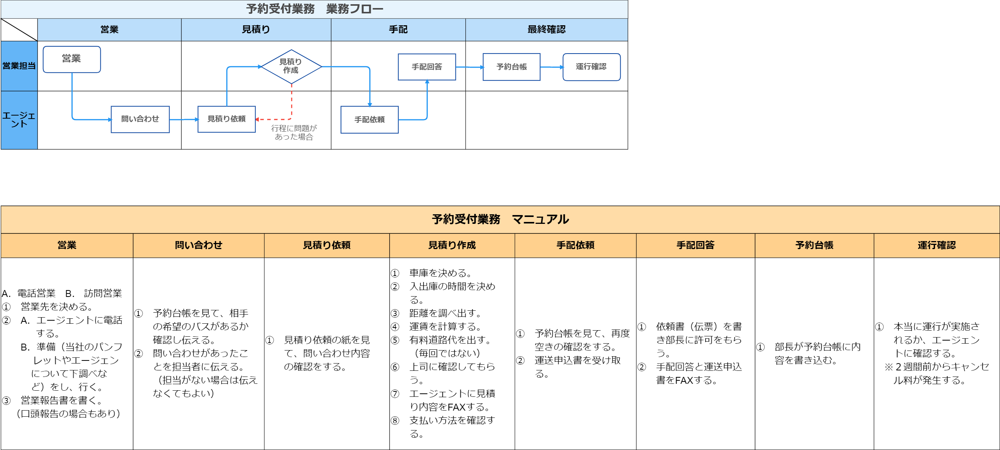

FLOW 01
予約受付業務
エージェントからの問い合わせ受領 → 見積り → 手配 → 運行確認。営業担当とエージェントの 2 者で進行。
ダイアグラム
工程フロー（スイムレーン）
シーケンス図
工程ごとのタスク
① 営業
営業担当
- 電話営業／訪問営業
- 営業先のパンフレット・訴求イメージを台帳に入力
- 営業報告（必要に応じて）
問い合わせ受付
営業担当 ← エージェント
- 予約台帳を確認し、対象日のバス空きを伝える
② 見積り依頼
営業担当 ← エージェント
- 担当者への共有を忘れない
見積り作成
営業担当
- 車種を決める
- 日時／出発時間を決める
- 距離を出す
- 料金を算出
- 有料道路代を算出
- 支払い方法を確認
- エージェントに見積りを FAX
③ 手配依頼
エージェント
- 予約台帳を見て再度内容確認
- 運送伝票を起票
手配回答
営業担当
- 依頼書（伝票）を書き起こす
- 手配回答と運送積込書を FAX
④ 予約台帳
営業担当
- 部数を予約確認時に使用するため整える
運行確認
営業担当
- 本当に運行が実施されるかをエージェントに確認
- 1 週間前のキャンセル時は要件発生
原本資料を見る（業務マニュアル）
